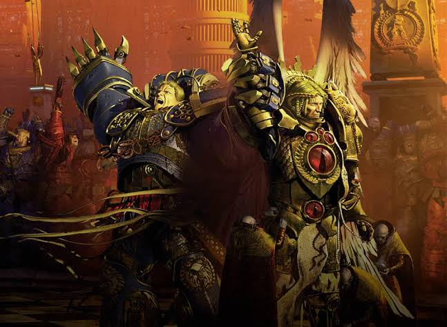

Imperium Secundus
| Imperium Secundus | |
|---|---|
| The Unremembered Empire | |
 Artwork © Games Workshop | |
| Status | Contingency state; dissolved |
| Founded | c. 009.M31[a] |
| Dissolved | By 014.M31, during the Siege of Terra (see below) |
| Capital | Macragge Civitas, Macragge |
| Territory | The Five Hundred Worlds of Ultramar and loyal worlds of the Eastern Fringe behind the Ruinstorm |
| Ideology | Imperial Truth |
| Government | |
| Type | Triumvirate of primarchs |
| Imperator Regis | Sanguinius |
| Lord Warden | Roboute Guilliman |
| Lord Protector | Lion El'Jonson |
| Armed forces | |
| Ultramarines, Blood Angels and Dark Angels Legions; Ultramar Auxilia; elements of the Imperial Army, Armada Imperialis, Mechanicum and Titan Legions; survivors of the Shattered Legions | |
| History | |
| Preceded by | Imperium of Mankind (in Ultramar) |
| Succeeded by | Imperium of Mankind; Regency of Ultramar |
The Imperium Secundus, also called the Unremembered Empire or the Second Imperium, was a contingency empire founded at Macragge during the Horus Heresy, in about 009.M31. When the Warp storm called the Ruinstorm cut the eastern half of the galaxy off from Terra, the primarch Roboute Guilliman could no longer tell whether the Emperor lived or whether the Throneworld had fallen to the Warmaster Horus. He resolved to preserve what remained of the Emperor's realm around the Five Hundred Worlds of Ultramar, so that the Imperium would not die with its capital.[1][2]
The empire was ruled by three primarchs. Sanguinius of the Blood Angels was crowned Imperator Regis, regent-emperor in his father's stead. Guilliman took the title of Lord Warden and governed its civil affairs. Lion El'Jonson of the Dark Angels was named Lord Protector, with command of its armies in a role that Imperial scholars compare with that of Warmaster.[2][3] The arrangement was troubled from the start. The Lion distrusted Guilliman's motives, the Night Lords' primarch Konrad Curze waged a campaign of murder on Macragge, and the alien beacon that guided the empire's fleets was lost at the Battle of Sotha.
The Imperium Secundus was abandoned by 014.M31, once it became clear that the Emperor and the Imperium had survived. Its three rulers led their Legions into the Ruinstorm, but only Sanguinius and the Blood Angels passed through it, after the Second Battle of Davin, in time to fight at the Siege of Terra. Guilliman afterwards counted the empire among the gravest errors of his life. Its records were largely sealed after the Great Scouring, and it is still rarely spoken of on Macragge.[1][4]
Background
[edit]Calth and the Ruinstorm
[edit]In 007.M31 the Word Bearers attacked the Ultramarines at the muster on Calth. The Battle of Calth cost the XIII Legion roughly half its strength and most of its fleet. In its last hours the Dark Apostle Erebus completed a rite on the planet's surface that raised the Ruinstorm, a Warp tempest of a size not seen since the Age of Strife. The Shadow Crusade of the Word Bearers and World Eaters across Ultramar fed it further. The storm divided the galaxy. No astropathic message could cross it, the light of the Astronomican could not be seen from the Eastern Fringe, and Warp travel became a gamble with every jump.[1][5]
The Pharos
[edit]Ultramar was not wholly blind. On the world of Sotha, the Ultramarines had found an ancient xenos device, buried in the heart of a mountain, which they called the Pharos. Mechanicum adepts learned to make it cast a light into the Warp that Navigators could follow much as they followed the Astronomican, though over a smaller span. With it the fleets of Ultramar could still move between their own worlds, and loyalists stranded elsewhere behind the storm could find their way to Macragge.[2][6]
The question of Terra
[edit]By 009.M31 Guilliman had no word from Terra for two years. The few reports that reached Macragge spoke of traitor fleets on the route to the Sol System and of loyal worlds falling silent. He judged that Terra might already have fallen, and that if it had not, he had no means of learning so. His advisers urged him to declare himself the Emperor's heir or at least regent. He refused. Ultramarines chroniclers record that he feared to be seen doing what Horus had done, taking a throne in his father's absence, and that he believed one man could not both command a war and rule a realm.[2]
Guilliman nevertheless began to build the structures of a second empire, first in secret and then openly. He prepared the government of Ultramar to administer worlds beyond its borders, gathered survivors of the loyal Legions broken at the Drop Site Massacre, and raised in the Macragge Civitas a council chamber with a granite table and twenty-one seats, one for the Emperor and one for each of his sons. Two of the seats were draped in blank cloth for the Lost Primarchs of the II and XI Legions.[2][6]

Founding
[edit]
Arrival of the Lion
[edit]The first primarch to reach Macragge was Lion El'Jonson. The Dark Angels had spent the first years of the war fighting the Night Lords in the Thramas Crusade, and the Lion's fleet followed the light of the Pharos out of the Thramas Sector. Guilliman received him with full honours. Some forty-seven thousand warriors of the XIII Legion formed his honour guard, and more than a million citizens filled the streets of the capital.[2]
The meeting between the two primarchs was cordial in public and strained in private. The Lion suspected that Guilliman meant to make himself a second Emperor, as Horus had tried to do, and Guilliman believed his brother secretive and hard to trust. In the council chamber Guilliman set out his plan and offered the Lion the regency of the new empire. The Lion declined. Later Terran sources hold that Malcador the Sigillite had feared before the Ruinstorm that Guilliman might found a realm of his own if cut off, and had hoped that the First Legion would restrain him if he did. Whether the Lion carried any such charge is not recorded.[1][3]
The Dark Angels brought an unwanted passenger. Konrad Curze, primarch of the Night Lords, had boarded the Lion's flagship, the Invincible Reason, at the end of the Thramas campaign and hidden in its depths. He reached Macragge with the fleet.[5]
The coming of Sanguinius
[edit]Sanguinius and the Blood Angels came next. The IX Legion had been trapped by the Warmaster in the Signus Cluster, where it lost a great part of its strength to daemons, and had since been unable to reach Terra. Guided by the Pharos, Sanguinius led the surviving Legion to Macragge.[1][7]
Guilliman saw in Sanguinius the candidate he needed. The Angel was loved by his brothers and by the people of every world he had visited, and Guilliman held that he shared more of the Emperor's nobility than any other primarch. Sanguinius was reluctant to accept, but at length agreed. He was crowned in Macragge Civitas as Imperator Regis, ruler of the Imperium Secundus until contact with Terra was restored. Popular accounts on Macragge simply called him the new Emperor.[2][7]
Offices of state
[edit]The three primarchs divided the government between them. The arrangement is sometimes called the Triumvirate of Macragge.
| Office | Holder | Duties |
|---|---|---|
| Imperator Regis | Sanguinius | Head of state and regent for the Emperor. Final authority over the empire. |
| Lord Warden | Roboute Guilliman | Head of the civil government. Administration, supply, law and the Pharos. Some records style him chief adviser to the Imperator Regis. |
| Lord Protector | Lion El'Jonson | Supreme commander of the empire's armies and fleets and guardian of its security, with powers comparable to those of the Warmaster. |
The title of Lord Protector belonged to the Lion, not to Guilliman. Some later summaries confuse the two offices, but the surviving Ultramarines and Blood Angels records agree on the division.[b][2][3]
Government and forces
[edit]The Imperium Secundus covered the Five Hundred Worlds of Ultramar and such loyal worlds of the Eastern Fringe as could be reached by the Pharos. Its administration was in practice the government of Ultramar, extended. Guilliman's officials supplied the fleets, raised regiments, and kept the census of worlds that had declared for Macragge. The Vigil Opertii, the intelligence service of Ultramar, watched for traitors and agents of the Warmaster.[6]
Its armies were the three Legions present: the Ultramarines, still the largest Legion despite Calth, the Blood Angels, and the Dark Angels. To them were added the Ultramar Auxilia, the Praecental Guard of Macragge, loyal Imperial Army regiments, Mechanicum forces and Titans, and detachments of the Shattered Legions and other Legions that had come to Macragge by chance or by design. Small bodies of White Scars, Space Wolves, Imperial Fists, Salamanders, Iron Hands and Raven Guard were among them.[5]
The empire kept the Imperial Truth as its creed. It made no claim of divinity for the Emperor or for Sanguinius, though some of the people of Macragge treated the Angel's coronation as a holy event.[7]

History
[edit]Curze on Macragge
[edit]The first trial of the new empire came from within its capital. Konrad Curze slipped off the Invincible Reason and began a campaign of terror on Macragge. Officials were murdered and their bodies displayed, bombs were set in the city, and riots broke out in districts that had lost faith in the Lord of Macragge. Curze is believed to have attempted the life of Guilliman himself.[2][5]
In the same days Vulkan of the Salamanders, believed dead since the Drop Site Massacre, appeared on Macragge, by means that the surviving records do not explain. He warned his brothers of Curze and joined the hunt. Vulkan fell in the fighting on Macragge in a state that his sons took for death, and the Salamanders who were present afterwards carried his body back to Nocturne.[5][c]
As Lord Protector the Lion took charge of the security of the capital. He placed parts of Macragge under martial law and used the Dark Angels to restore order, in some districts with weapons that the Ultramarines thought far too harsh to use on their own people. Guilliman protested, and the two primarchs came close to blows. The Lion at last captured Curze in the Illyrium region of Macragge, and the Night Haunter was imprisoned to await judgement.[3][2]
The Battle of Sotha
[edit]The traitors knew the value of the Pharos. In about 010.M31[d] a Night Lords force attacked Sotha in an attempt to seize or destroy it. The loyalists defended the world, and the attackers were defeated. The Pharos itself did not survive the battle in working order. Its loss left the empire's fleets once more with no light to steer by in the storm. Accounts differ on whether the device was destroyed by the enemy, turned against the Night Lords fleet by its keepers and burned out, or deliberately silenced.[1][e]
Strains within the triumvirate
[edit]The empire's rulers did not agree on how it should be run. The Lion's command of its armies sat poorly with Guilliman, who had built most of the forces he now commanded. Guilliman's habit of planning for every outcome, including the empire's own survival without Terra, seemed to the Lion to show ambition. Sanguinius stood between them. He was troubled throughout by visions of his own death on Terra, and by his own unease at sitting on a throne in his father's place.[7]
The question of Curze divided them most. Guilliman wanted a trial before the people of Macragge. The Lion wanted the Night Haunter dead. Sanguinius, who is said to have foreseen that Curze would meet his fate on his own world, did not demand his execution. Curze remained a prisoner for a time and later escaped, in circumstances that Blood Angels records attribute to Sanguinius's tacit consent.[7][5]
End of the Imperium Secundus
[edit]Proof that the Emperor lived
[edit]By 014.M31, the last year of the Heresy, it was clear to the loyalists behind the Ruinstorm that the Emperor and the Imperium had survived. The evidence came from several sources: reports from the last workings of the Pharos, visions granted to Sanguinius, and the thinning of the Ruinstorm. The ruling triumvirate then abandoned the Imperium Secundus, which was now unnecessary and was coming to be seen as disloyal, even heretical. Sanguinius set aside the title of Imperator Regis. The territories of the empire were restored to the sectors of the Imperium that had held them before, or to the Realm of Ultramar, which was left in the care of a regency under Valentus Dolor.[1][6]
The road to Davin
[edit]Guilliman, Sanguinius and the Lion then led the greater part of their Legions into the Ruinstorm, hoping to reach Terra and aid the Emperor against Horus. Their course led to Davin, the world where Horus had first been corrupted, which was now a daemon realm and the anchor of the storm. After the Second Battle of Davin a passage opened through the storm, but only Sanguinius and the Blood Angels came through it. They reached the Throneworld and took part in the Siege of Terra; Sanguinius died aboard the Vengeful Spirit at the end of it. The Ultramarines and the Dark Angels did not pass the storm in time to join the defence.[1][5][8]
Legacy
[edit]The Imperium Secundus left almost no trace in the official histories. Imperial scholars of the following centuries treated it as an embarrassment: an empire raised by loyal sons in their father's lifetime, whose existence could be read as a lesser form of the treason it was meant to oppose. Many of its records were sealed at the end of the Scouring, and some appear to have been destroyed. The name "Unremembered Empire" reflects this neglect.[1]
Guilliman himself regarded the empire as a grievous error made in good faith. After his return in the Era Indomitus as Lord Commander of the Imperium, he spoke of it rarely, and only to admit that he had been wrong to despair of his father. Imperial commentators have noted that the regency he exercises in the 42nd millennium, ruling in the name of an Emperor who sits silent on the Golden Throne, resembles the arrangement he once tried to build for Sanguinius.[4]
The empire also shaped the later history of the Dark Angels and the Blood Angels. The long absence of the Lion and his Legion behind the Ruinstorm is held by some to have given Luther the opportunity to turn Caliban against him. For the Blood Angels, Sanguinius's coronation is remembered as the moment their primarch came closest to his father's place, and the Chapter's histories record it with reverence.[3][7]
Timeline
[edit]| Date | Event |
|---|---|
| 007.M31 | The Battle of Calth and the raising of the Ruinstorm; the Shadow Crusade invades Ultramar. |
| 007–008.M31 | The Ultramarines find the Pharos on Sotha and drive the Shadow Crusade out of Ultramar. |
| 008.M31 | Roboute Guilliman fights Lorgar at the Battle of Nuceria. |
| 009.M31 | With no word from Terra for two years, Guilliman prepares a second empire at Macragge. |
| 009.M31 | Lion El'Jonson arrives from the Thramas Crusade, with Konrad Curze hidden aboard his flagship. |
| 009.M31 | Sanguinius arrives from Signus and is crowned Imperator Regis; the Imperium Secundus is proclaimed. |
| c. 009–010.M31 | Curze's campaign of terror on Macragge; Vulkan appears and falls in the hunt.[f] |
| c. 010.M31 | The Battle of Sotha; the Pharos is lost.[g] |
| c. 011.M31 | The Lion captures Curze, who later escapes.[h] |
| By 014.M31 | Proof that the Emperor lives; the triumvirate abandons the empire. |
| 014.M31 | The Second Battle of Davin opens a way through the Ruinstorm for the Blood Angels. |
| 014.M31 | Sanguinius and the Blood Angels reach Terra; Guilliman and the Lion do not get through the Ruinstorm. |
| 014.M31 | Sanguinius dies aboard the Vengeful Spirit at the end of the Siege of Terra. |
| Late M31 | The records of the Imperium Secundus are sealed at the end of the Great Scouring. |
See also
[edit]Notes
[edit]- ^ Ultramarines chronicles give the proclamation in 009.M31. Some Administratum reckonings place it in 010.M31. The Ruinstorm made the passage of time hard to measure on Macragge, and no record of the period is fully reliable.
- ^ The title "Lord Protector" was later used for unrelated offices, notably by Drakan Vangorich after the Beheading in the 32nd millennium. The Imperium Secundus title has no connection with them.
- ^ Salamanders tradition holds that Vulkan rose again on Nocturne. The details are kept by the Chapter and are not part of the Ultramarines record.
- ^ Date estimated from the sequence of events.
- ^ One Mechanicus report from Sotha states that before the end the Pharos showed its keepers a faint image of the Astronomican, the first sign seen behind the Ruinstorm that the Emperor still lived. The Logos Historica Verita has not confirmed this.
- ^ Date estimated from the sequence of events.
- ^ Date estimated from the sequence of events.
- ^ Date estimated from the sequence of events.
References
[edit]- ^ a b c d e f g h i Abnett, Dan. Unremembered Empire (novel). Black Library.
- ^ a b c d e f g h i j Kyme, Nick. Deathfire (novel). Black Library.
- ^ a b c d e Smillie, Andy. Herald of Sanguinius (Audio). Black Library.
- ^ a b Thorpe, Gav. Angels of Caliban (novel). Black Library.
- ^ a b c d e f g Haley, Guy. Pharos (novel). Black Library.
- ^ a b c d Annandale, David. Ruinstorm (novel). Black Library.
- ^ a b c d e f Haley, Guy. Dark Imperium (novel). Black Library.
- ^ Abnett, Dan. Unremembered Empire (novel). Black Library.